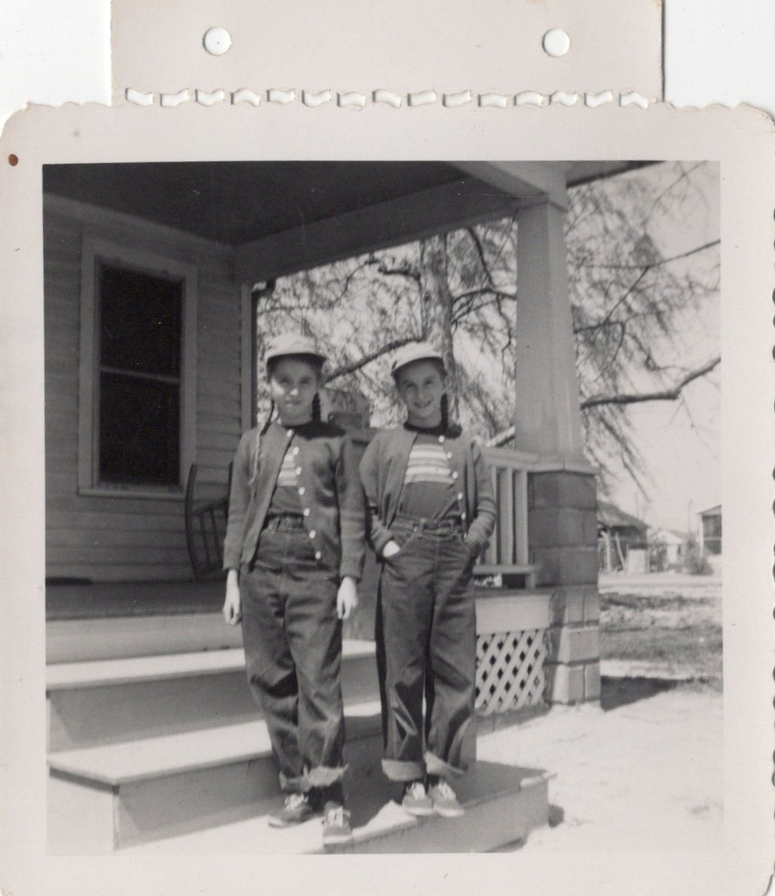
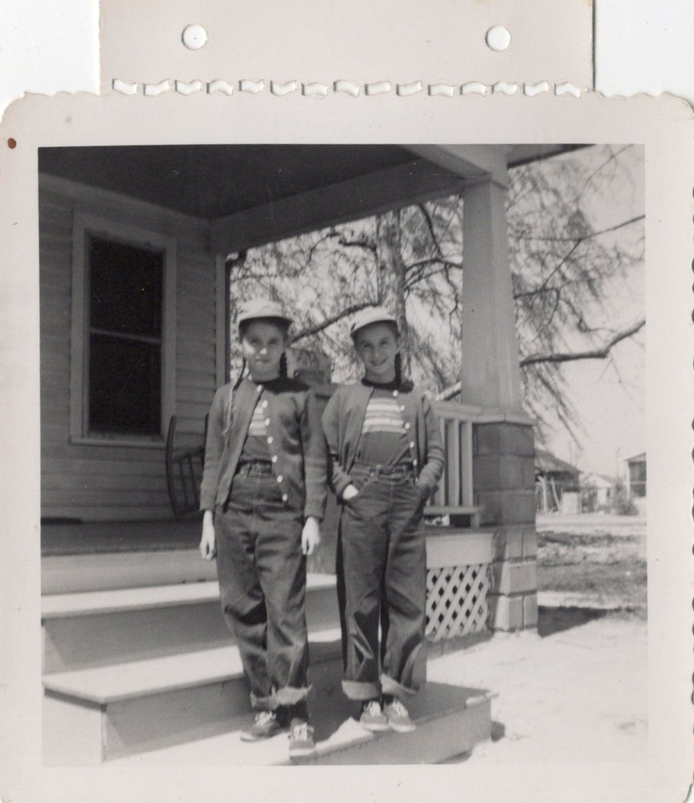
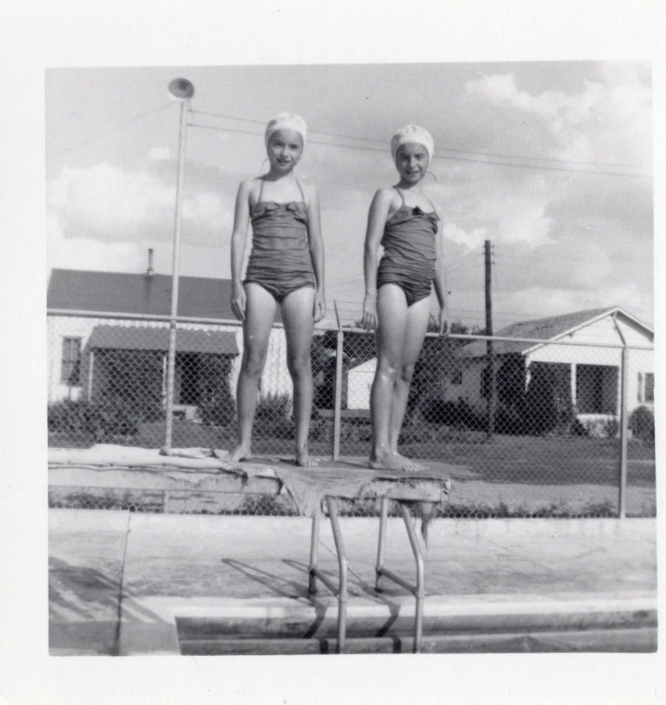
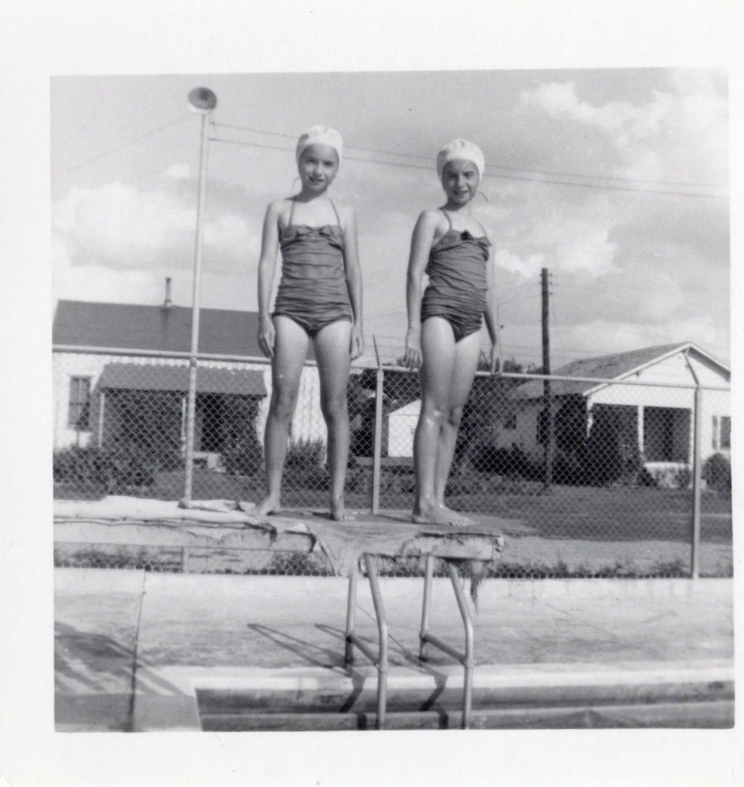
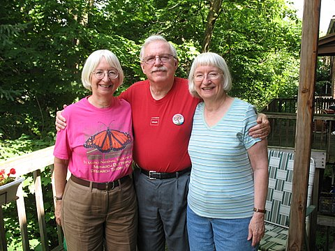
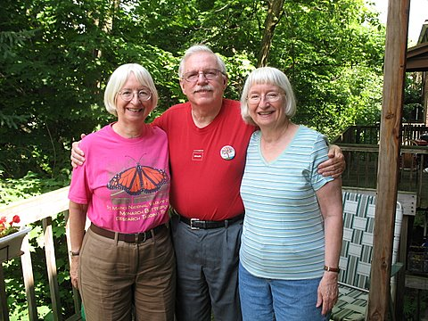

In Loving Memory of Virginia Craig
1942 – 2024

Virginia Dell Craig, age 82 of Tallahassee, FL (formerly of Pittsburgh, PA) died peacefully in Big Bend Hospice. She is survived by her niece Ellen Maddock (Valerie Gortmaker) , nephew Geoffrey Maddock (Cassandra Stevens), and brother-in-law Robert Maddock. She is predeceased by her twin sister, Nancy Ann Maddock and parents Wlmot Walker and Virginia Dell Craig.
Virginia spent most of her working life at West Penn Hospital as in instructor in the medical technology school, she moved to Tallahasse in 1994 where she worked for Tallahassee Memorial Hospital until her retirement.
Virginia loved to explore and wonder at the natural world, a botanist that was able to identify almost any plant. She took great joy in finding and photographing flowers, spending many days exploring the Apalachicola National Forest and wilds of Florida. In her younger years she was an avid yoga practitioner. She was also a prolific maker of beautiful handmade books. In her retirement years she volunteered with the American Red Cross and butterfly conservation efforts.
A celebration of life will be planned for a later date, I encourage those that loved Virginia to spend a day appreciating the natural world as she did with a sense of wonder and awe.
The Summer Day
Who made the world?
Who made the swan, and the black bear?
Who made the grasshopper?
This grasshopper, I mean —
the one who has flung herself out of the grass,
the one who is eating sugar out of my hand,
who is moving her jaws back and forth instead of up and down —
who is gazing around with her enormous and complicated eyes.
Now she lifts her pale forearms and thoroughly washes her face.
Now she snaps her wings open, and floats away.
I don't know exactly what a prayer is.
I do know how to pay attention, how to fall down
into the grass, how to kneel down in the grass,
how to be idle and blessed, how to stroll through the fields,
which is what I have been doing all day.
Tell me, what else should I have done?
Doesn't everything die at last, and too soon?
Tell me, what is it you plan to do
with your one wild and precious life?
+ Mary Oliver
Gallery

 

 


 
